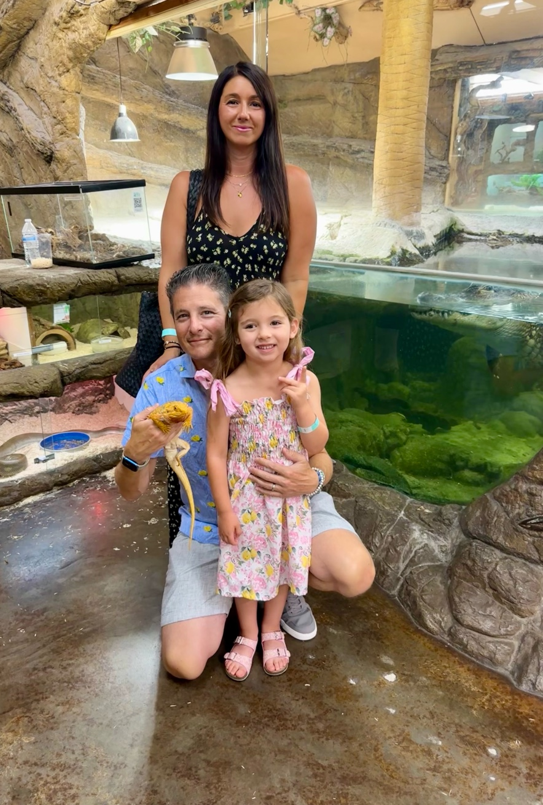
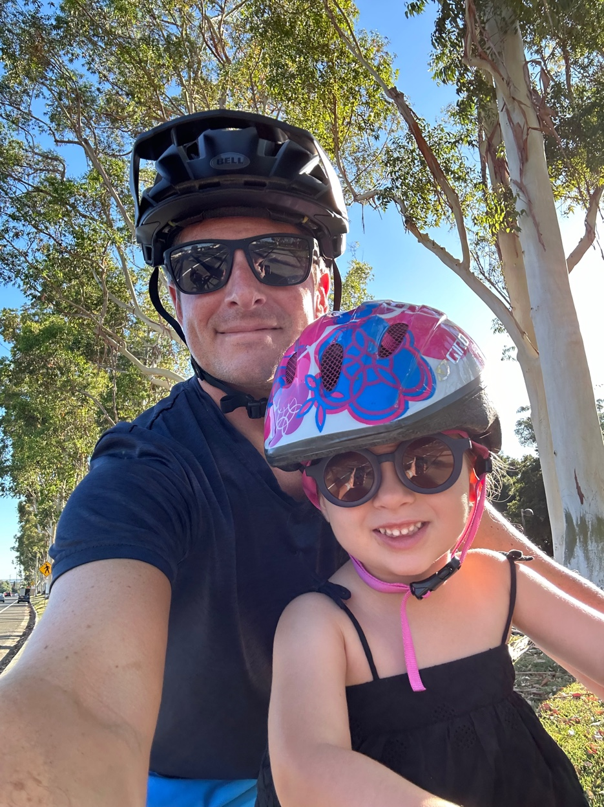

About
For more than 20 years, I have worked at the intersection of business and technology in financial services, helping banks, credit unions, fintechs, and technology providers navigate transformation. What differentiates my perspective is the ability to bridge disciplines that too often operate independently—strategy and execution, business and technology, innovation and operational reality.
I believe banking's next chapter will be defined by the convergence of open banking and artificial intelligence. As financial capabilities become accessible through standardized APIs and intelligent agents, banking will evolve from products and channels into composable services that can be embedded, orchestrated, and personalized in entirely new ways. I describe this future as capability banking—where financial services are delivered through intelligent ecosystems rather than isolated applications.
My career began inside banking with JPMorgan Chase before expanding into digital banking, cloud modernization, core transformation, and open banking leadership roles. Along the way, I have helped financial institutions modernize platforms, launch digital banks, implement open banking programs, and build the foundations required to support innovation at scale.
Today, I serve as Vice President within Fiserv's Financial Services Transformation organization, focused on advancing platform openness, API strategy, ecosystem enablement, and the intersection of open banking and AI. My work centers on helping financial institutions unlock innovation while maintaining the stability, security, and trust the industry depends upon.
Beyond my day job, I actively build and experiment with emerging technologies. I believe leaders should be practitioners, not observers. Whether exploring AI-assisted software development, agentic systems, or new approaches to financial technology, I enjoy turning ideas into working solutions and testing assumptions through direct experience.
The most meaningful challenges in financial services still reside closest to the core. That's where complexity, opportunity, and transformation intersect—and it's where I choose to spend my time.
Current Role
Head of Open Banking, Technology
Fiserv
Leading open banking and platform openness initiatives within Fiserv's core account processing organization. Focused on advancing interoperability, modern integration patterns, and ecosystem-ready platforms that enable secure data access, partner enablement, and scalable innovation across core banking environments.
Certifications
Lean Six Sigma Black Belt
Rutgers University
Education
Syracuse University
B.S. Finance; Entrepreneurship and Emerging Enterprises
Martin J. Whitman School of Management
What I'm Working On
At Fiserv, I'm exploring how generative and agentic AI can enhance core and digital banking by leveraging open banking infrastructure to unlock new capabilities and efficiencies. At home, I enjoy innovating and prototyping using AI — proving you can ship real products without writing code from scratch.
Currently focused on:
- Exploring how generative and agentic AI can transform banking operations and customer experience
- Mastering vibe coding and rapid prototyping
- Advancing modern integration architectures and API-first platform design
Beyond Work
Family is everything to me. When I'm not innovating in fintech, you'll find me on the trails, exploring new places, or spending time with my girls.
My girls
Our love of Mustangs

Reptile adventures
Exploring new places

Trails with Lacie
Connect
Email: Bruce@schilderinc.com